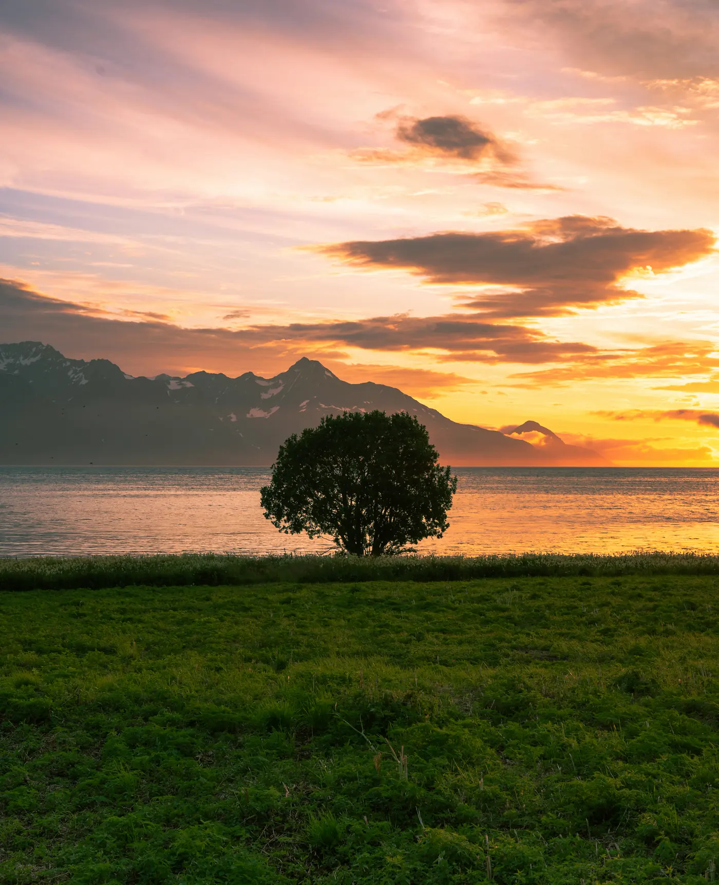
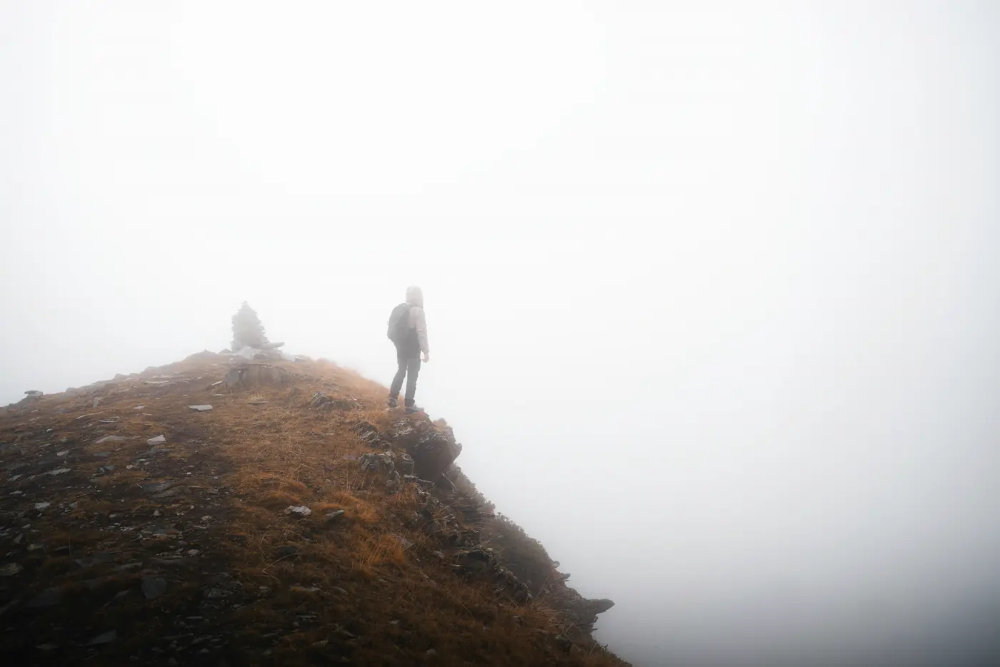
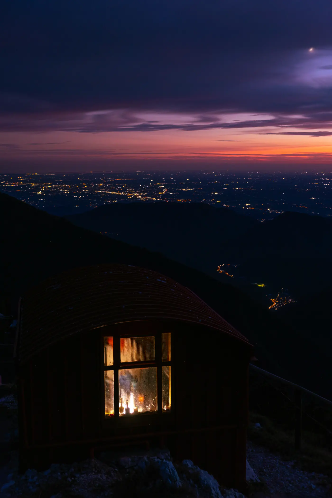
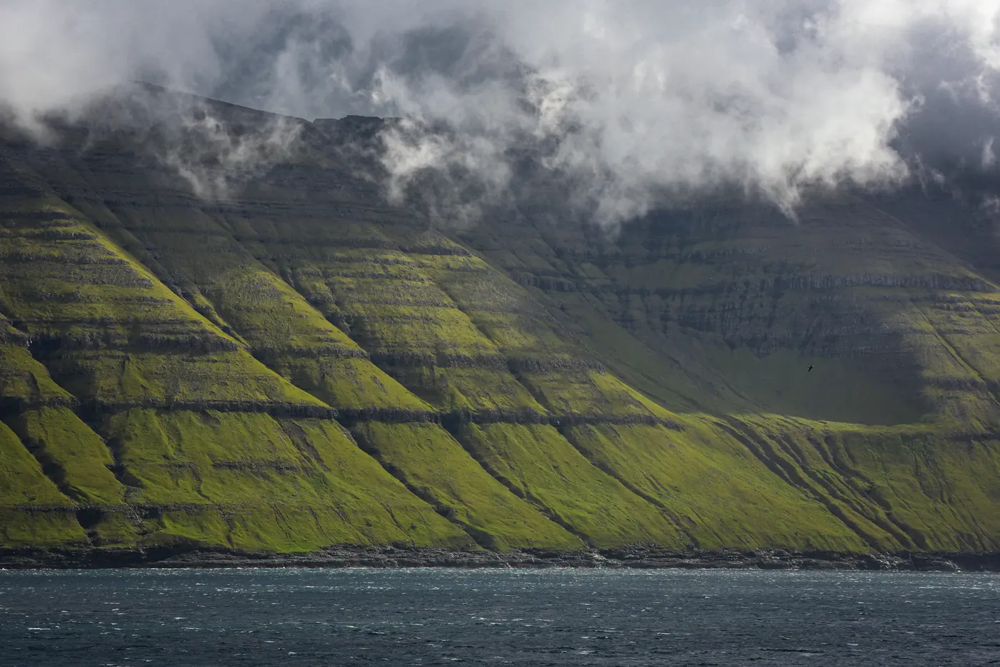

Six entries from 2026 so far, one per departure that had something worth writing down. We keep them short; the days are long.

Lyngen Alps23 June 2026
The hour the fjord goes copper
At 23:40 the sun was still a hand above the Ullsfjord and the water had gone the colour of a pan left on the stove. We had walked since four in the afternoon and nobody wanted to stop, so we didn't. Camp at ten past one, in daylight, with the tent doors facing the wrong way on purpose so the brightness wouldn't wake anyone.
Note for next year: the birch on the point by the river mouth is the place for the long stop, not the beach. The beach has the view. The birch has the view and a rock to lean on.

Svaneti11 August 2026
Above Adishi, in cloud
The Chkhutnieri pass is 2,655 m and we saw none of it. Cloud came up the valley at six and stayed, so the whole morning was walked inside a white room with a grass floor. People talk differently in cloud. Quieter, and about things they would not usually say at a viewpoint.
It cleared at Iprali, forty minutes before supper, long enough to see Tetnuldi once. One is plenty.

Alta Via 19 July 2026
A window at 2,250 m
Rifugio Tissi, the night of day ten. The generator stops at ten and the only light left is the one in the dining room, which the warden leaves on for the people still looking at the Civetta from the terrace. Below, the lights of Alleghe, which from here look like a thing you could pick up.
Someone asked why this was the hut we give two nights to and not Lagazuoi, which is higher. This is why. The high point is a number; this is a room.

Faroe Islands4 October 2026
Kalsoy, in the rain
Three hours of rain on the walk out to Kallur and then, as if a decision had been taken somewhere, none. The lighthouse is 1.6 m taller than a tall person and the cliff beside it is a good deal taller than that, so we sat well back and ate the last of the rye bread while the sea did its thing below.
The ferry back to Klaksvík is small and does not wait. We ran the last kilometre, which is against policy, and made it with four minutes to spare, which is also against policy.
Also this year
Two more, without pictures.
Doorway, Rifugio Lagazuoi, 05:12. Alta Via 1, 4 July. The hut warden said we could leave the door open if we were quiet about it. Nobody was quiet about it. We watched the Tofane go from grey to pink to white in eleven minutes, and then went in for coffee as if nothing had happened.
Forty minutes of colour. Torres del Paine, 19 March. We timed it this year: thirty-eight minutes from the first red on the Cuernos to the last, and then wind. The tents held. One of the group, who has seen the Alps every summer for thirty years, said nothing at all for most of it, which we took as the review.